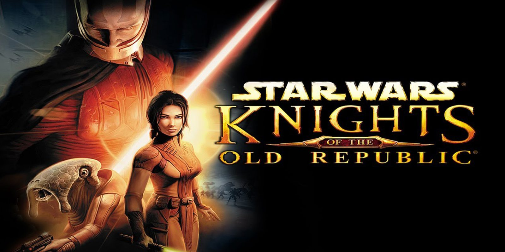
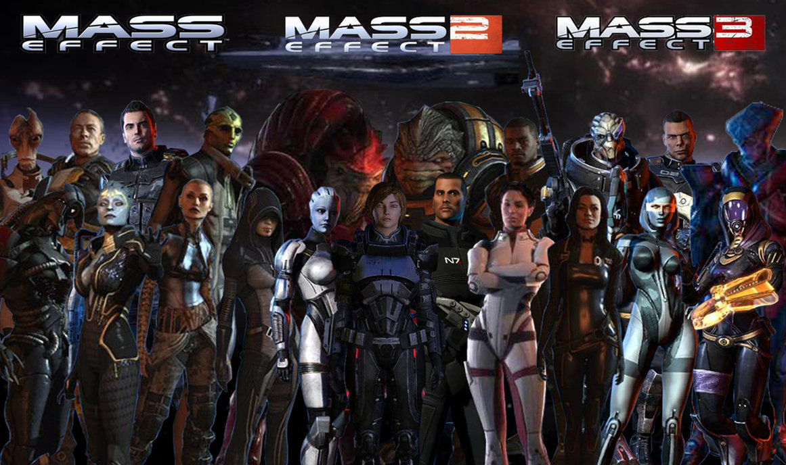
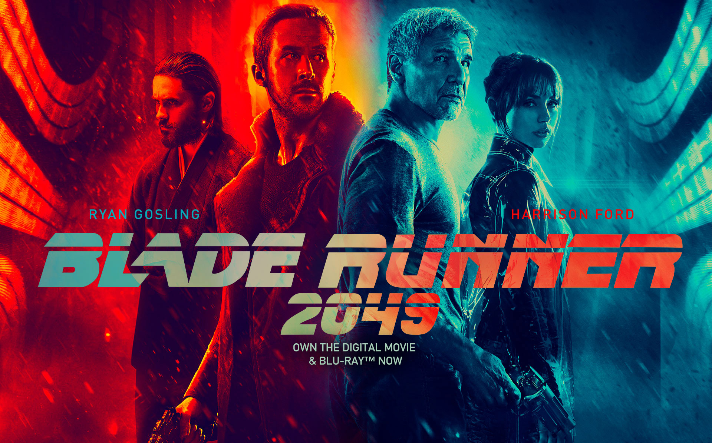

My name is Andrew Littlefield, as I mentioned before I am a developer and massive fan of video games and movies. Some of my other hobbies include dirt bike riding, camping, arcades, bowling and playing most sports on a non competitive level. My favorite sport to watch is football and to my own dismay my team is the 49ers.
It maybe obvious but video games and movies are a huge passion of mine. So I've decided to list off some of my favorites for you to check out!
Star wars Knights of the Old republic is one of my all time favorite video games. Playing a jedi whose actions and dialoge choices actually affected outcomes was an incredible experience, and still is to this day.
The Mass Effect Trilogy contains some of the most incredible story elements in video games. And the fact that your saves and choices affect those in the sequels is astounding. Much like the Lord of the Rings trilogy, these games are all great on their own, but together they are something magical.
Though Blade Runner 2049 is a fairly new release, I have to mention it as one of my all time favorites. I think it might just be my favorite Sci Fi movie of all time. The filmography combined with the music score and acting make this film such an amazing experience. I’ve never wished for a 3 hour movie to be longer. 10/10